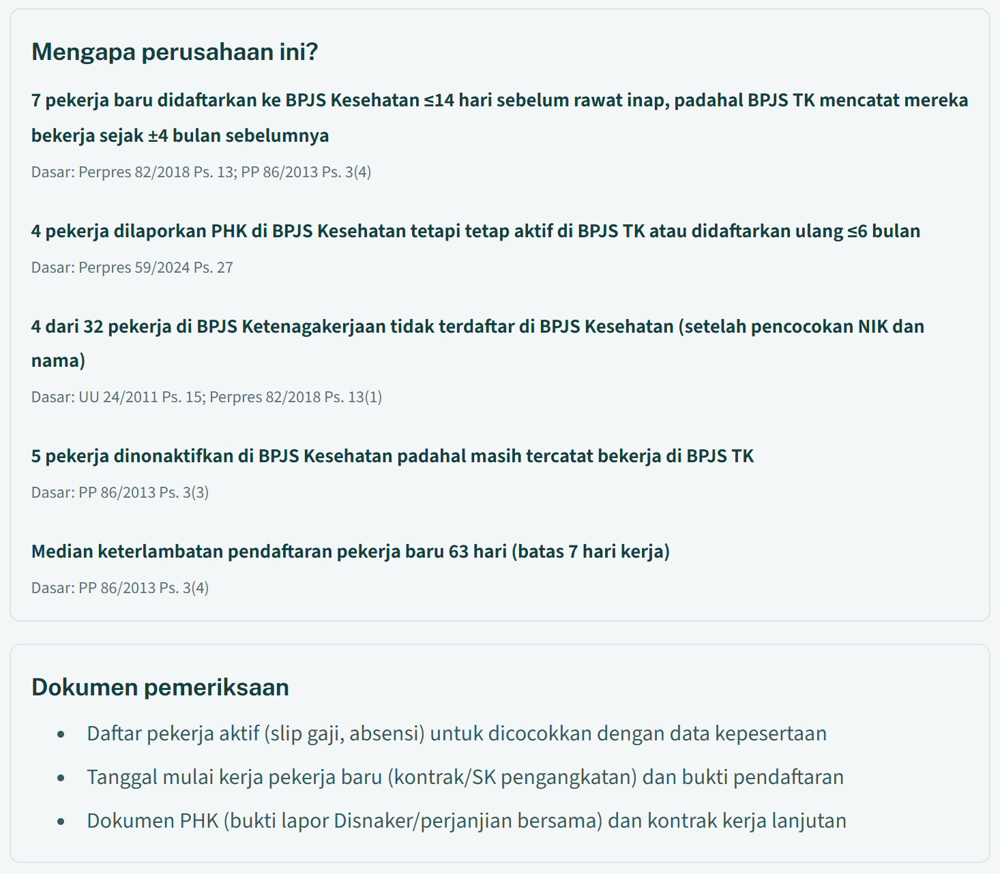
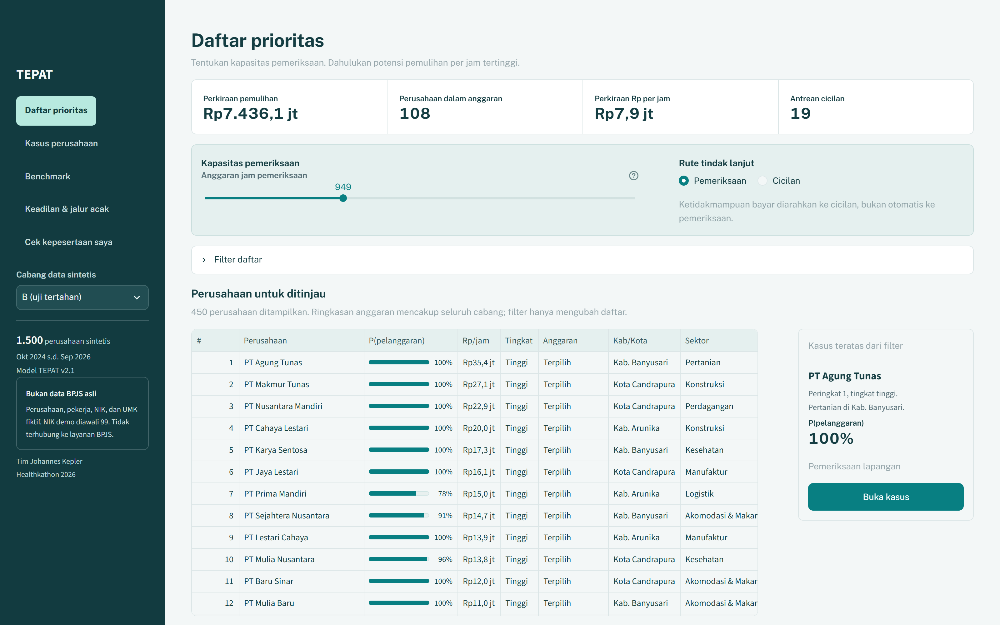

TEPAT
Pemeriksaan Kepatuhan Tepat Sasaran
TEPAT membantu tim kepatuhan BPJS Kesehatan menentukan pemberi kerja mana yang perlu ditindaklanjuti lebih dulu, apa alasannya, dan tindakan apa yang sepadan, dengan data yang sudah dimiliki dan dipertukarkan BPJS.
- Kategori
- Efisiensi Risiko pada Pemberi Kerja
- Tim Johannes Kepler, SMA Negeri 34 Jakarta
- Rabbani Putrowi (ketua), Raffa Maliq Revaya, Ahmad Fahri Fauzi
Proposal Healthkathon 2026. Seluruh data di proposal dan demo adalah data sintetis. Tidak ada data peserta JKN riil.
Satu kategori, empat sub-mode inti
Kategori Efisiensi Risiko pada Pemberi Kerja. Penomoran sub-mode mengikuti Participant Guide Healthkathon 2026.
Dibangun dan diuji
- 1Pendaftaran Pekerja Sebagian. Pekerja tercatat di BPJS Ketenagakerjaan tetapi tidak di BPJS Kesehatan, termasuk yang hanya didaftarkan sebagai tanggungan pasangannya.
- 2Under-reporting Upah. Upah ke BPJS Kesehatan lebih rendah daripada ke BPJS Ketenagakerjaan, atau menumpuk di UMK melebihi pola sektor sejenis.
- 3Penggelapan atau Penundaan Setoran Iuran. Membayar BPJS Ketenagakerjaan tepat waktu, tetapi iuran BPJS Kesehatan terlambat atau kurang.
- 5Manipulasi Data Mutasi. Pekerja baru didaftarkan terlambat (ada yang baru didaftarkan menjelang rawat inap), atau dikeluarkan sebelum benar-benar berhenti, termasuk PHK yang diikuti rekrut ulang.
Pendukung: 4. Misklasifikasi Status Kerja (perpindahan pekerja secara berkelompok ke segmen mandiri atau PBI; peserta mandiri di klinik milik perusahaan).
Peta jalan, belum dibangun: 6. Kolusi dengan faskes.
Mengapa posisi ini berbeda
Menjawab langkah yang dinyatakan BPJS sendiri: memakai data pertukaran untuk menentukan sasaran pemeriksaan bersama.
Memakai jejak yang hanya dimiliki JKN: data pelayanan kesehatan ikut menjadi bukti kepatuhan pemberi kerja.
Mengurutkan menurut rupiah yang dapat dipulihkan per jam pemeriksaan, karena yang terbatas adalah jam pemeriksa.
Iuran yang tidak masuk ikut menekan dana JKN
Sampai September 2026. Selisih arus kas Rp14 triliun; pemerintah menambah Rp20 triliun pada Oktober dan November 2026.
- Biaya pelayanan kesehatan naik dari Rp108,8 triliun (2019) menjadi Rp190,3 triliun (2025).
- Tunggakan iuran seluruh segmen peserta mencapai Rp21,48 triliun dari 28,85 juta peserta per Desember 2024. Porsi pemberi kerja tidak dipublikasikan, jadi kami tidak memperkirakannya.
- 67,2 juta peserta JKN adalah pekerja penerima upah (PPU). Iurannya 5% dari upah: 4% dibayar pemberi kerja, 1% dipotong dari gaji pekerja dan wajib disetor oleh pemberi kerja.
Pekerja yang tidak didaftarkan, upah yang dilaporkan lebih rendah, dan iuran yang dipotong tetapi tidak disetor adalah iuran yang semestinya masuk.
Kami membingkainya sebagai soal efisiensi pengumpulan dan integritas data, bukan tuduhan terhadap pemberi kerja.
Jam pemeriksa terbatas, perusahaan banyak
- BPJS Kesehatan menyebut tantangannya sendiri: SDM terbatas, volume transaksi terus naik, dan data makin kompleks.
- Satu wilayah cabang (Tulungagung, Trenggalek, Pacitan) memeriksa 1.544 perusahaan sepanjang 2025.
- Pengawasan saat ini berjalan lewat sinkronisasi dan validasi data, monitoring, telemarketing, pemeriksaan, dan SPHP. Pemeriksaan menyasar badan usaha yang "terindikasi belum optimal". Cara mengurutkan sasaran tidak dipublikasikan.
Tulungagung: 1.092 badan usaha yang terdata
Data satu cabang, bukan angka nasional.
Siapa yang paling terdampak
- Pekerja. Bila pemberi kerja belum membayar iuran sampai akhir bulan, kepesertaan pekerja dihentikan sementara mulai tanggal 1 bulan berikutnya. Pekerja bisa baru mengetahuinya saat membutuhkan layanan.
- Dana JKN. Iuran yang semestinya masuk tidak masuk.
- Pemberi kerja yang patuh. Setiap pemanggilan yang salah sasaran menyita waktu mereka dan jam pemeriksa.
Mengapa sekarang
- 7 September 2026: BPJS Kesehatan dan BPJS Ketenagakerjaan menandatangani PKS pengawasan dan pemeriksaan bersama. Langkah berikut yang mereka nyatakan: memakai data yang dipertukarkan "untuk menentukan sasaran pengawasan dan pemeriksaan bersama".
- Pemerintah menyatakan akan menertibkan perusahaan yang tidak menanggung BPJS pekerjanya.
TEPAT mengubah data yang sudah dimiliki BPJS menjadi daftar tindak lanjut berprioritas, dengan alasan yang bisa diperiksa
- 1Data BPJS yang sudah ada: kepesertaan, iuran, file pertukaran BPJS Ketenagakerjaan, data pelayanan.
- 2TEPAT menghitung sinyal per sub-mode dan perkiraan rupiah yang dapat dipulihkan.
- 3Pemeriksa menerima daftar sesuai kapasitas jam bulan itu, lalu memutuskan.
Untuk setiap pemberi kerja, pemeriksa melihat
- peringkat menurut rupiah yang dapat dipulihkan per jam pemeriksaan;
- perkiraan rupiah dengan rentang, dipecah menjadi selisih iuran, biaya perawatan yang menjadi tanggung jawab pemberi kerja, dan biaya masa bebas iuran PHK;
- tiga alasan teratas dalam bahasa sehari-hari, masing-masing dengan pasal dasarnya;
- saran tindakan dan daftar dokumen yang perlu diminta.
Saran TEPAT di cabang uji (1.500 pemberi kerja, data sintetis)
Untuk pekerja ada tampilan Cek kepesertaan saya: sudah didaftarkan atau belum, upah yang dilaporkan, dan apakah iuran sudah dibayar.
TEPAT tidak menjatuhkan sanksi. Keputusan tetap di tangan pemeriksa.
Satu kasus dari antrean cabang uji

PT Baru Sejahtera (fiktif)
Usaha kecil, sektor perdagangan, Kab. Banyusari (fiktif). Peringkat 26 dari 1.500.
Perkiraan pemulihan Rp46,5 juta (rentang Rp21,8 juta s.d. Rp89,7 juta). Saran: pemeriksaan lapangan.
Alasan terkuat: 7 pekerja baru didaftarkan ke BPJS Kesehatan paling lama 14 hari sebelum rawat inap, padahal BPJS Ketenagakerjaan mencatat mereka sudah bekerja sekitar 4 bulan sebelumnya.
Mengapa penting
Pemberi kerja yang belum mendaftarkan pekerjanya bertanggung jawab atas biaya pelayanan kesehatan pekerja itu (Perpres 82/2018 Pasal 13 ayat (5)).
Yang tidak ditandai
Pekerja baru yang memang sakit di minggu pertama. Sinyal ini hanya menyala bila BPJS Ketenagakerjaan mencatat pekerja itu sudah bekerja minimal 60 hari sebelum didaftarkan ke BPJS Kesehatan.
Kunci jawaban simulasi: kasus ini memang ditanam sebagai pola "didaftarkan saat sakit". Kunci jawaban hanya ada di data sintetis; skorer tidak membacanya.
Apa yang berubah dibanding cara sekarang
| Saat ini | Dengan TEPAT |
|---|---|
| Data BPJS Kesehatan dan BPJS Ketenagakerjaan dicocokkan 4 kali setahun. | Hasil pencocokan langsung menjadi daftar tindak lanjut berprioritas, langkah yang dinyatakan BPJS sebagai berikutnya. |
| Pemeriksaan menyasar badan usaha yang "terindikasi"; cara mengurutkannya tidak dipublikasikan. | Setiap peringkat punya alasan, pasal, dan perkiraan rupiah dengan rentang, sehingga bisa diuji ulang. |
| Pemeriksaan bersama berfokus pada pendaftaran pekerja, kesesuaian upah, dan tunggakan. | Data pelayanan JKN ikut menjadi bukti: pendaftaran menjelang rawat inap, perawatan saat kepesertaan nonaktif, peserta mandiri di klinik milik perusahaan. |
| Di satu cabang, 25% s.d. 45% badan usaha yang dipanggil hadir saat pemeriksaan (Depok, 2021). | Tindakan mengikuti kekuatan bukti: surat untuk kasus sedang, kunjungan untuk kasus kuat, cicilan untuk yang tidak mampu bayar, jalur hijau untuk yang patuh. |
| Di luar negeri, INPS Italia (2026) menganalisis 33.732 pemberi kerja dan mengirim lebih dari 12.000 surat kepatuhan; inspektorat ketenagakerjaan Yunani melatih model pada 16,7 ribu hasil pemeriksaan. | TEPAT memakai pendekatan yang sudah berjalan di tingkat nasional, ditambah bukti dari data pelayanan kesehatan yang tidak dipakai kedua contoh itu. |
Mengapa cocok untuk BPJS
Tidak meminta data baru dari pemberi kerja.
Mengikuti tangga sanksi yang sudah ada, yang dimulai dari teguran tertulis (PP 86/2013).
Sejalan dengan arahan Healthkathon 2026: mulai dari masalah, deteksi dini, dan manusia yang memutuskan.
Data masukan: semuanya sudah ada di BPJS atau dipertukarkan lewat PKS
| Data | Pemilik | Status |
|---|---|---|
| Kepesertaan PPU per pekerja: NIK, tanggal mulai dan berakhir, alasan keluar, upah yang dilaporkan | BPJS Kesehatan | sudah dimiliki |
| Tagihan dan pembayaran iuran per bulan, per lembaga | BPJS Kesehatan; data BPJS TK lewat PKS | sudah dimiliki; data BPJS TK perlu disepakati |
| File pertukaran BPJS Ketenagakerjaan per kuartal: NIK, nama, upah, tanggal mulai kerja | BPJS Ketenagakerjaan, lewat PKS | dipertukarkan 4 kali setahun; isi kolomnya belum kami ketahui |
| Peristiwa pelayanan: tanggal, rawat jalan atau inap, biaya, status kepesertaan. Tanpa diagnosis | BPJS Kesehatan | sudah dimiliki |
| Segmen peserta, data keluarga, perpindahan segmen | BPJS Kesehatan | sudah dimiliki |
| Registri FKTP, termasuk klinik milik perusahaan | BPJS Kesehatan | sudah dimiliki |
| Registri badan usaha: NIB, sektor, skala, jumlah pekerja yang dinyatakan di OSS | BPJS Kesehatan, OSS | sebagian; integrasi OSS perlu dikonfirmasi |
| UMK per kabupaten/kota | publik | tersedia |
| Jam pemeriksaan per skala usaha | asumsi kami: 3, 6, 12, dan 24 jam | perlu dikalibrasi bersama BPJS |
Di prototipe, semua tabel ini dibuat oleh generator sintetis dengan struktur yang sama; tidak ada data JKN riil. Batas bawah UMK hanya diterapkan pada usaha menengah dan besar, karena Perpres 59/2024 Pasal 32 ayat (4) mengecualikan usaha mikro dan kecil.
Proses dan model: aturan biasa di mana cukup, model di mana perlu
- Pencocokan pekerja lintas BPJS. NIK salah ketik dan variasi nama dicocokkan dengan jarak Hamming pada NIK dan kemiripan nama.
- Sekitar 25 sinyal per pemberi kerja, dikelompokkan per sub-mode.
- Perkiraan rupiah per komponen: selisih iuran, biaya perawatan saat kepesertaan nonaktif, masa bebas iuran PHK.
- Regresi logistik menggabungkan sinyal menjadi peluang pelanggaran. Dilatih pada 600 pemberi kerja (40%) dari cabang latih sebagai "hasil pemeriksaan masa lalu".
- Prioritas: peluang pelanggaran dikali perkiraan rupiah, dibagi jam pemeriksaan.
- Aturan tindakan memilih surat, kunjungan, pemeriksaan bersama, atau cicilan.
Di mana AI dipakai, dan di mana tidak
| Bagian | Cara | Alasan |
|---|---|---|
| Selisih jumlah pekerja BPJS TK dan BPJS Kesehatan; upah di bawah UMK; bayar BPJS TK tetapi tidak BPJS Kesehatan; pendaftaran menjelang rawat inap; PHK lalu rekrut ulang; tanggungan yang ternyata bekerja | aturan biasa, sengaja | setiap aturan memetakan satu kewajiban hukum dan mudah dijelaskan kepada pemberi kerja |
| Pencocokan identitas lintas lembaga | pencocokan fuzzy | NIK salah ketik dan ejaan nama yang berbeda lolos dari pencocokan persis |
| Pola upah dibanding sektor dan skala sejenis | model pembanding | under-reporting upah tidak melanggar satu angka batas |
| Penggabungan sinyal | regresi logistik | koefisiennya bisa dibaca, data latih kecil, dan setiap peringkat harus bisa dijelaskan |
| Draf surat kepatuhan | LLM, belum dipakai | rencana: hanya menulis dari alasan yang sudah terstruktur, tidak pernah menilai atau memutuskan |
Keluaran, arsitektur, dan keamanan
Pemeriksa cabang
Daftar prioritas sesuai kapasitas jam, halaman kasus berisi alasan, pasal, grafik pembayaran, dan dokumen yang perlu diminta.
Kepala cabang
Tampilan keadilan (siapa yang terpilih per sektor, wilayah, dan skala) dan jalur acak.
Pekerja
Cek kepesertaan saya, dengan tombol untuk melapor.
Alur penerapan yang kami rancang
Data BPJS di lingkungan BPJS, lalu NIK disamarkan, pembentukan sinyal, model, daftar dan kasus, keputusan pemeriksa, dan hasil pemeriksaan kembali menjadi data latih.
| Pengaman | Status |
|---|---|
| Skorer hanya membaca data yang memang bisa dilihat BPJS, tidak pernah kunci jawaban simulasi | sudah dibangun, diuji otomatis |
| Data pelayanan yang dipakai hanya tanggal, jenis, biaya, dan status kepesertaan; tanpa diagnosis | sudah dibangun |
| Pemrosesan di dalam lingkungan BPJS; tidak ada data yang keluar | rancangan penerapan |
| NIK disamarkan di tahap sinyal; identitas dibuka hanya di halaman kasus untuk pemeriksa yang berwenang | rancangan penerapan |
| Akses per peran dan log setiap kali kasus dibuka | rancangan penerapan |
Tahap Prototype: fitur utama berfungsi dan bisa dicoba

Ide, Mockup, Prototype, MVP, Produk
- Generator data sintetis: 3 cabang fiktif, masing-masing 1.500 pemberi kerja dan 105 ribu s.d. 118 ribu pekerja, selama 24 bulan (Oktober 2024 s.d. September 2026). Pelanggaran ditanam per sub-mode, ditambah pemberi kerja jujur yang sengaja dibuat mirip pelanggar.
- Skorer: sinyal, perkiraan rupiah dengan rentang, alasan, saran tindakan, antrean cicilan.
- Benchmark dengan anggaran jam pemeriksaan yang sama untuk semua metode.
- Aplikasi web, lima tampilan: Daftar prioritas, Kasus perusahaan, Benchmark, Keadilan & jalur acak, Cek kepesertaan saya.
- 53 uji otomatis, termasuk uji bahwa skorer tidak pernah membaca kunci jawaban.
Di mana diuji: hanya uji internal pada data sintetis. Belum ada uji coba dengan pengguna nyata atau data nyata.
Dengan jam pemeriksaan yang sama, TEPAT memulihkan 2,3 kali rupiah per jam dibanding aturan saja
Anggaran sama untuk semua metode: 10% dari total jam pemeriksaan. Cabang uji tidak dipakai untuk melatih. Rata-rata 5 seed, rentang antar-seed dalam kurung.
| Metode | Presisi | Rp dipulihkan per jam pemeriksaan | Pemberi kerja jujur ikut terpilih |
|---|---|---|---|
| Acak | 20% | Rp1,1 juta | 10,0% |
| Aturan saja | 35% | Rp3,9 juta | 4,0% |
| TEPAT v1 | 93% | Rp8,3 juta | 0,5% |
| TEPAT v2 | 88% | Rp8,5 juta | 1,0% |
| TEPAT v2.1 | 95% (93 s.d. 97) | Rp8,9 juta (7,1 s.d. 11,1) | 0,4% (0,2 s.d. 0,7) |
- 2,3 kali aturan saja (1,9 s.d. 3,7 kali antar-seed) dan 8 kali pemilihan acak.
- Cabang bergeser (campuran sektor berbeda, lebih banyak pemberi kerja jujur yang mirip pelanggar, pola yang tidak pernah dilatih): 2,1 kali aturan saja, 7,7 kali acak.
- Tidak pernah kalah dari aturan saja di 80 kombinasi seed, pengaturan, dan cabang. Terendah 1,18 kali.
- Recall terbatas oleh anggaran: di seed utama ada 306 pelanggar dan jam cukup untuk 108 pemeriksaan, jadi paling banyak sekitar 35% pelanggar bisa diperiksa. TEPAT mencapai 34%.
- v2.1 berbeda dari v2 karena pemberi kerja yang tampak tidak mampu bayar dialihkan ke antrean cicilan.
Semua angka adalah hasil metode pada data sintetis dengan asumsi kami sendiri, bukan perkiraan pemulihan nasional.
Rencana dan kelayakan
0. Prototipe
selesai, Oktober 2026
Generator, skorer, benchmark 5 seed, aplikasi publik.
DeliverableTautan demo, laporan benchmark.
1. Hackathon
sekitar 3 minggu
Kalibrasi asumsi bersama mentor BPJS (jam pemeriksaan, periode pemulihan, isi file pertukaran); alur surat dan jalur hijau di aplikasi; sinyal baru untuk sub-mode yang masih lemah.
DeliverableTEPAT v3, benchmark ulang dengan asumsi terkalibrasi, draf DPIA.
2. Uji coba bayangan
3 bulan, bila BPJS bersedia
TEPAT berjalan berdampingan dengan proses yang ada di 1 s.d. 2 kantor cabang, pada data riil di lingkungan BPJS, tanpa mengubah keputusan. Ditambah pencocokan OSS/NIB untuk badan usaha yang belum terdaftar sama sekali.
DeliverableLaporan perbandingan hasil pemeriksaan, DPIA final.
3. Perluasan
setelah fase 2
Lebih banyak cabang; model dilatih ulang tiap kuartal mengikuti siklus pertukaran data.
DeliverablePanduan operasional, dasbor pemantauan model.
Sumber daya: tim 3 orang (data dan model, regulasi, produk); perangkat lunak terbuka (Python) yang berjalan di server biasa; akses data hanya lewat BPJS dengan DPIA; mitra: mentor tim pemeriksaan kepatuhan BPJS Kesehatan dan BPJS Ketenagakerjaan.
Fase 2 dan seterusnya membutuhkan pemilik dari pihak BPJS. Kami siswa SMA dan tidak mengklaim bisa menjalankannya sendiri.
Sebelum dan sesudah, diukur pada benchmark sintetis
Ini estimasi, bukan hasil lapangan.
| Ukuran | Sebelum (aturan saja) | Sesudah (TEPAT v2.1) |
|---|---|---|
| Rp dipulihkan per jam pemeriksaan | Rp3,9 juta | Rp8,9 juta |
| Pemeriksaan yang menemukan pelanggaran | 35% | 95% |
| Pemberi kerja jujur yang ikut diperiksa | 4,0% | 0,4% |
| Pemberi kerja yang tampak tidak mampu bayar | ikut diperiksa | ditawari cicilan (19 di cabang uji) |
Kapan keunggulannya besar, kapan kecil
Uji satu asumsi per kali.
- Paling besar saat jam pemeriksaan langka: anggaran 5% memberi 2,8 kali aturan saja.
- Mengecil bila jam pemeriksaan sama untuk semua ukuran perusahaan (1,4 kali) atau anggaran 20% (1,6 kali). Asumsi jam pemeriksaan per skala menentukan besarnya keunggulan.
- Bila hanya 5% pemberi kerja melanggar, presisi turun ke 34%, dan TEPAT memilih sedikit lebih banyak pemberi kerja jujur dibanding aturan (5,2% berbanding 3,9%). Dalam keadaan itu anggaran pemeriksaan sebaiknya dikurangi.
Kami tidak memproyeksikan angka ini ke tingkat nasional, karena prevalensi pelanggaran dan jam pemeriksaan yang sebenarnya belum diketahui.
Nilai bagi tiap pihak, dan mana yang sudah terukur
| Pihak | Nilai | Status |
|---|---|---|
| Pekerja | Terdaftar dengan upah yang benar; bisa mengecek sendiri; lebih kecil kemungkinan kepesertaannya nonaktif karena tunggakan pemberi kerja. | dirancang; cek mandiri sudah ada di demo |
| BPJS Kesehatan | Jam pemeriksa dipakai untuk kasus dengan potensi pemulihan terbesar; setiap keputusan terdokumentasi. | terukur di benchmark sintetis |
| Pemberi kerja patuh | Jalur hijau, lebih jarang dipanggil. | terukur di benchmark sintetis |
| Pemberi kerja yang kesulitan | Ditawari cicilan sebelum penindakan. | sudah ada di prototipe |
| Faskes | Lebih sedikit pasien PPU yang statusnya nonaktif saat dilayani. | harapan, belum diukur |
| Sistem JKN | Iuran PPU lebih lengkap, mendukung target cakupan aktif 83,5% dalam RPJMN 2025 s.d. 2029. | harapan, belum diukur |
Cara mengukur di uji coba: rupiah dipulihkan per jam pemeriksaan; persentase pemeriksaan yang menemukan pelanggaran; waktu persiapan per kasus; persentase pemberi kerja yang melakukan koreksi mandiri setelah menerima surat; persentase pemberi kerja jujur yang terpilih; jalur acak (8% jam pemeriksaan) sebagai pembanding yang tidak bias.
Pelindungan data pribadi
| Ketentuan | Cara TEPAT memenuhinya |
|---|---|
| Data sintetis saja | Prototipe, demo, dan proposal tidak memakai data peserta JKN riil. |
| Dasar pemrosesan | Saat diterapkan: kewajiban hukum dan pelaksanaan tugas pelayanan publik (UU 27/2022 Pasal 20 ayat (2) huruf c dan e), dalam kerangka pengawasan kepatuhan pemberi kerja yang diatur Peraturan BPJS Kesehatan 3/2019. |
| Klasifikasi data | Data kesehatan adalah data pribadi spesifik (Pasal 4 ayat (2) huruf a); upah adalah data pribadi umum. TEPAT hanya memakai tanggal, jenis, biaya, dan status kepesertaan dari data pelayanan, tanpa diagnosis. |
| DPIA | Wajib, karena TEPAT melakukan penilaian (scoring) dan pencocokan dataset (Pasal 34). PP 33/2026 yang merinci DPIA berlaku mulai 16 Januari 2027, sebelum uji coba mana pun. |
| Pengendali bersama | BPJS Kesehatan dan BPJS Ketenagakerjaan perlu perjanjian pengendali bersama (Pasal 18). PKS 7 September 2026 adalah tempat yang wajar untuk mengaturnya. |
| Bukan keputusan otomatis | Subjek data berhak keberatan atas keputusan yang semata-mata otomatis (Pasal 10). Di TEPAT, setiap tindakan diputuskan pemeriksa. |
| Kewajiban lain | Pemberitahuan kegagalan pelindungan data dalam 3 x 24 jam (Pasal 46) dan pejabat pelindungan data pribadi (Pasal 53). |
AI, bias, dan tiga risiko utama
TEPAT mengusulkan, pemeriksa memutuskan. Alasan dan keputusan dicatat. Surat kepatuhan tidak bernada menuduh dan memberi kesempatan koreksi mandiri.
| Risiko | Mengapa nyata di TEPAT | Mitigasi |
|---|---|---|
| 1. Pemberi kerja jujur ikut terpilih, atau label "tidak mau bayar" salah. Label ini bisa mengarah ke Pasal 55 UU 24/2011, yang membawa ancaman pidana. | Kelompok yang paling sering salah terpilih adalah pemberi kerja yang sedang kesulitan kas: 13% dari kelompok ini masih masuk daftar di cabang uji. | Antrean cicilan untuk yang terlambat di kedua BPJS; surat sebelum kunjungan; rujukan ke Pasal 55 tidak pernah otomatis; persentase pemberi kerja jujur yang terpilih dipantau tiap siklus. |
| 2. Bias terhadap sektor, wilayah, atau skala tertentu, dan model hanya belajar dari kasus yang dulu dipilih. | Data latih berasal dari hasil pemeriksaan, dan yang diperiksa adalah yang dulu dipilih. | Tampilan Keadilan memantau tingkat terpilih per sektor, wilayah, dan skala; 8% jam pemeriksaan untuk pilihan acak terstratifikasi. Batas: di cabang uji jalur acak hanya 15 s.d. 16 pemeriksaan, terlalu sedikit untuk mengukur prevalensi dari satu siklus. |
| 3. Asumsi sintetis tidak sesuai kenyataan, atau pemberi kerja menyesuaikan perilaku. | Prevalensi, jam pemeriksaan, dan periode pemulihan adalah asumsi kami. | Uji coba bayangan sebelum dipakai; kalibrasi ulang tiap kuartal; cabang bergeser sudah menguji pola yang tidak pernah dilatih (tetap 2,1 kali aturan saja). |
Tim Johannes Kepler, SMA Negeri 34 Jakarta
Rabbani Putrowi
Ketua; data dan model
Membangun generator data sintetis, skorer, benchmark, dan aplikasi demo.
Di fase hackathon: kalibrasi model dengan asumsi dari mentor BPJS.
Raffa Maliq Revaya
Regulasi dan riset kepatuhan
Bertanggung jawab atas dasar hukum setiap sinyal (UU 24/2011, Perpres 82/2018 dan 59/2024, PP 86/2013, UU PDP) dan pemeriksaan sumber setiap angka.
Di fase hackathon: draf DPIA.
Ahmad Fahri Fauzi
Produk, UX, dan pitch
Bertanggung jawab atas alur kerja pemeriksa di aplikasi, materi presentasi, dan demo.
Di fase hackathon: alur surat kepatuhan dan jalur hijau.
Mengapa tim ini bisa mengeksekusi
Peran dibagi mengikuti tiga kebutuhan solusi: data, regulasi, dan pengguna. Prototipe sudah berjalan dan bisa dicoba lewat tautan; hasilnya diuji ulang dengan 5 seed dan uji sensitivitas; setiap angka di proposal punya sumber.
Yang tidak kami klaim
Kami siswa SMA dan tidak punya pengalaman kerja di BPJS. Karena itu kami membutuhkan mentor dari tim pemeriksaan kepatuhan untuk mengkalibrasi asumsi.
Asumsi dan batasan yang kami nyatakan terbuka
- Semua hasil berasal dari data sintetis dengan asumsi kami: 20% pemberi kerja melanggar; jam pemeriksaan 3, 6, 12, dan 24 jam per skala usaha; periode pemulihan 12 bulan (diuji 6 s.d. 24 bulan; Perpres 59/2024 Pasal 42 ayat (3) membatasi tunggakan 24 bulan).
- Badan usaha yang sama sekali belum terdaftar di BPJS Kesehatan maupun BPJS Ketenagakerjaan tidak terlihat oleh TEPAT. Di Tulungagung, 676 dari 1.092 badan usaha yang terdata belum mendaftarkan pekerjanya. Pencocokan OSS/NIB masuk fase 2.
- Sub-mode yang masih lemah (recall TEPAT v2.1, rata-rata 5 seed): pekerja yang tidak tercatat di kedua BPJS 8%, upah lebih rendah dari pola sektor 21%, pekerja dikeluarkan sebelum berhenti 21%, penskalaan upah yang tidak pernah dilatih 9% (cabang bergeser).
- Rentang rupiah sedikit terlalu lebar: 89% nilai sebenarnya jatuh di dalam rentang 10 s.d. 90 persen, padahal targetnya sekitar 80%.
- Isi kolom file pertukaran BPJS Ketenagakerjaan belum kami ketahui. Prototipe mengasumsikan NIK, nama, upah, dan tanggal mulai kerja per pekerja.
- Sinyal lintas-BPJS di v2 hanya menambah 3% rupiah per jam dibanding v1, dan rentang antar-seed melewati nol. Nilainya ada pada alasan dan pilihan tindakan, bukan pada peringkat.
Sumber
Pengelola program dan kompetisi
- Participant Guide dan Panduan Pembuatan Proposal Healthkathon 2026
- Liputan6, 14 Agu 2026: arahan Healthkathon 2026
Keuangan dan kepesertaan JKN
- Kontan, 28 Sep 2026: selisih arus kas Rp14 triliun
- Kompas, 16 Sep 2026: biaya pelayanan 2019 s.d. 2025
- Kompas.id, Feb 2025: tunggakan iuran Rp21,48 triliun
- Antara, 14 Okt 2025: 67,2 juta peserta PPU
- CNBC Indonesia, 8 Apr 2026: kepesertaan dan target RPJMN
Kepatuhan pemberi kerja
- detik, 7 Sep 2026: PKS pengawasan dan pemeriksaan bersama
- Merdeka, 19 Apr 2026: 1.544 perusahaan diperiksa
- Merdeka, 19 Jun 2026, dan Antara Jatim: Tulungagung
- Kompas, 1 Jul 2026: penertiban perusahaan
- Aldiany dkk., JRIKUF 4(4), doi.org/10.57213/jrikuf.v4i4.1231
- Disnaker ESDM Bali, Des 2025; Kebumen Ekspres, Apr 2026
- Sentani dan Syakurah, JKM Cendekia Utama 10(2), 2022
Pembanding luar negeri
Regulasi
- UU 24/2011 Pasal 15, 19, 55; UU 1/2026 Lampiran no. 93
- UU 27/2022 tentang Pelindungan Data Pribadi; PP 33/2026
- PP 86/2013
- Perpres 82/2018 Pasal 13 dan 14; Perpres 59/2024 Pasal 27, 32, 42
- Peraturan BPJS Kesehatan 3/2019 (dikutip melalui Aldiany dkk.)
Prototipe
- Aplikasi: tepat-jkp.streamlit.app
- Kode tersedia untuk juri atas permintaan.